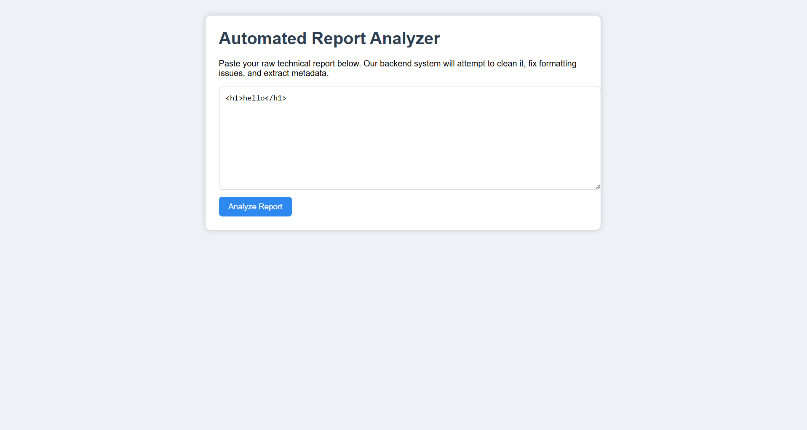
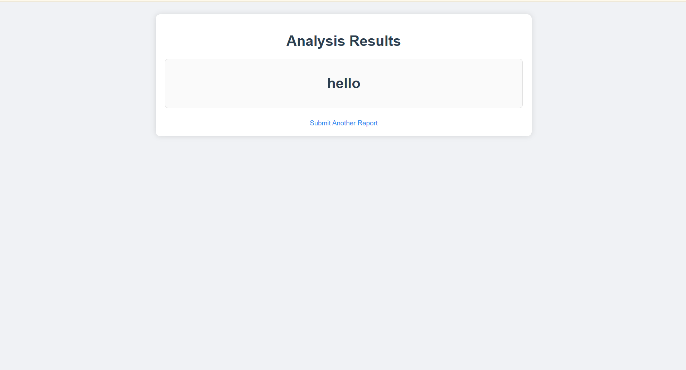
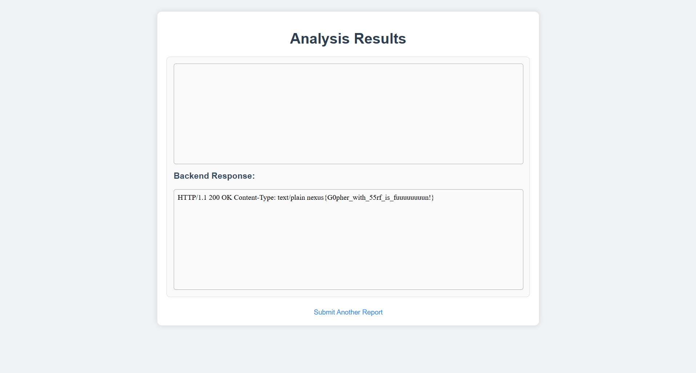

Author : 0xsila
Challenge Name
gofrita
Challenge Description :
When script kiddies report anything they find, architects try to escalate it to maximize the impact.
Which one are you?
a lot of bugbounty hunters or hackers hhhh report any bug they found (open redirect , html injection , user enumeration ....) , but the real architecturs try to maximize the impact ( open redirct => xss or oauth bug , html injection => xss or ssrf )
Vulnerability Chain
Iframe Injection → SSRF → Gopher Protocol → Header Bypass (X-Original-URL)
Challenge Overview
The goal of gofrita is to exploit a chained vulnerability that starts from a client-side iframe injection and ends with a Server-Side Request Forgery (SSRF) using the Gopher protocol, while bypassing internal access restrictions via the X-Original-URL header.
Steps :
The application allows user-controlled input to reflected in the UI without proper sanitization , the player start inject and try all what he know .
finnaly he got : html injection , and a self xss that he can not escalte to nothing ( in real world , try to chaine it with csrf or web cache poisining )

so the player continue with the html injection , the max impact now will be iframe injection ( in bugbounty , it will be considred as medium or even high if u got full screen and made a DoS )
thinking again as a ctf player , we still have to get the flag , and we had the iframe injection , start thinking for ssrf ( that what i hope u think about )

start using hacktricks tips , inject some ssrf paylods from payload all the things , but nothing work , keep seeing errors that told u go to study for exams .
trying to get some hints from the author ( it was me ) , and he still saying : try harder
btw the ctf idea was about gopher , so after the try harder from the player , it suppose that he try the gopher protocol , and start getting some custom errors , now he start being close .
Why Gopher is powerful:
Gopher enables sending raw TCP payloads, which means we can:
- Fully control the request structure
- Inject custom HTTP headers
- Interact with internal services directly
the player suppose to undertand each error is for what , and start customize his paylod .
after a lot of trying harder : the player arrive to this point of paylod :
<iframe src="gopher://127.0.0.1:3333/_GET%20/flag.txt%20HTTP/1.1%0d%0aHost:%20127.0.0.1%0d%0a%0d%0a%0d%0a">
here a lot of players stop playing and start complain about the challenge , and saying : it is guessy
but the real winners continue and go deeper , thinkig what will the author block ?
when the player start thinking that i blocked him to access directly to the flag , this is the last step between him and the flag
searching about some bypass of urls blcking , and they will find : X-Original-URL
a lot of proxy servers trust this header , which allow us to do a lot of things with that header .
extra idea : chaine it with web cache poisining is great idea .
the final paylod:
<iframe src="gopher://127.0.0.1:3333/_GET%20/blablabla%20HTTP/1.1%0d%0aHost:%20127.0.0.1%0d%0aX-Original-URL:%20/flag.txt%0d%0a%0d%0a"></iframe>
and get the flag :
